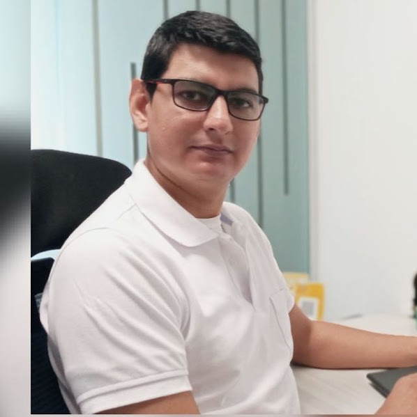

Ingeniero Electrónico con más de 10 años de experiencia en gestión operativa de proyectos en el sector energético e infraestructura. Trayectoria en firma Big Four (PwC) y empresas del sector eléctrico, liderando portafolios de inversión superiores a USD 50 millones.

Nací en una zona rural del Norte de Santander, cerca al área de influencia del Catatumbo — un entorno marcado históricamente por el conflicto armado y la escasez de recursos básicos. Mi formación como ingeniero en Barranquilla no fue un proceso estándar: tomó trece años de intermitencia condicionados por factores económicos, responsabilidades familiares y problemas de salud.
Esa trayectoria me permitió operar como observador en dos mundos: la base de la pirámide, donde la urgencia física define cada decisión, y la esfera profesional — IEEE, PwC, empresas del sector energético — donde observé el vacío existencial de quienes tienen sus necesidades cubiertas pero carecen de herramientas para gestionar su propósito.
Hoy aplico el rigor analítico de la ingeniería no solo a proyectos técnicos, sino a la comprensión de los sistemas humanos y organizacionales. Cada proyecto que gestiono lleva la perspectiva de quien entendió el valor de los recursos desde su ausencia.
Disponible para proyectos en el sector energético, consultoría de PMO y formación en gestión de proyectos.